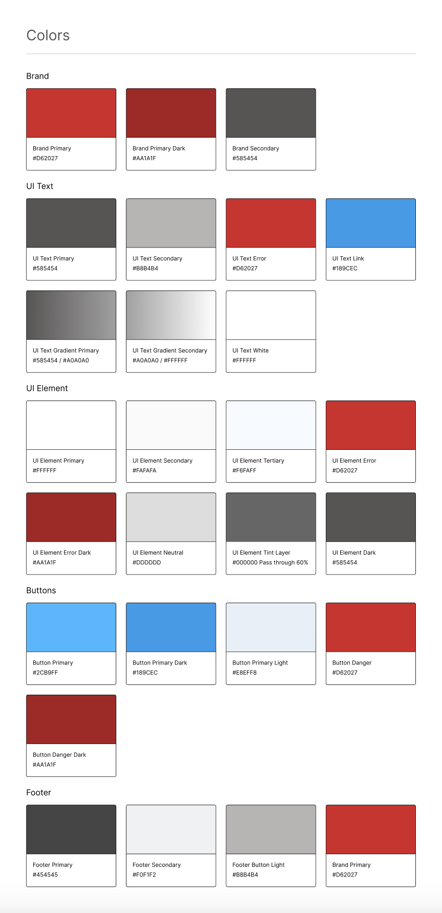
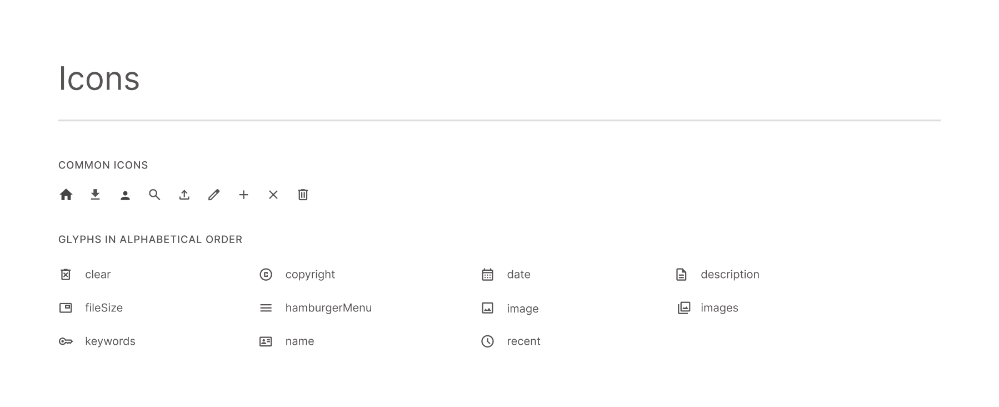
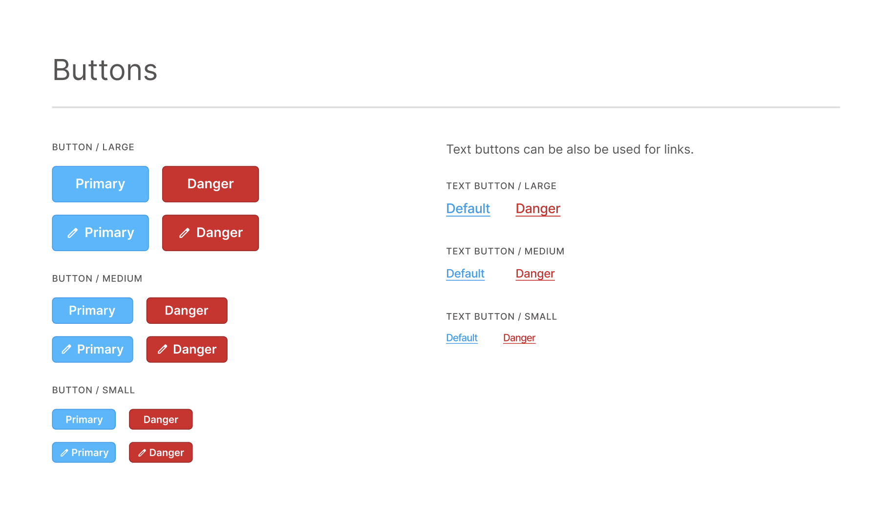
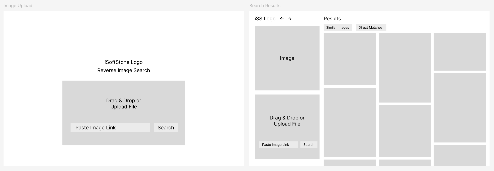

As the sole UI/UX designer on the product demo team, I created a shared design system, redesigned a desktop-only digital asset management demo for responsive use, and designed an image-based search workflow. The work focused on making the demos more coherent, reusable, and easier for prospective clients to understand.
The Problem
The existing demo divided closely related tasks across overlapping home, campaign, and search pages. It also depended on desktop-only hover interactions and used labels such as “Cart” for a free bulk-download workflow. Without a shared design system, new screens and concepts were also harder to carry consistently across devices.
My Role
I owned the UI/UX work from early exploration through high-fidelity prototypes, translating product needs into user flows, interaction patterns, responsive layouts, and reusable components. The work came together through three connected contributions.
1. Building the Pebble Design System
I created a reusable foundation for the demo work, defining color, typography, icons, controls, navigation, templates, and responsive behavior. This gave new screens a consistent visual language instead of requiring each concept to be designed from scratch.



2. Redesigning the Digital Asset Demo
I consolidated the overlapping destinations into a unified search experience, replaced ambiguous shopping language with a clearer “My Downloads” workflow, and adapted the interface for desktop, tablet, and mobile. I also introduced masonry results and first-page lazy loading to use space more effectively while reducing unnecessary navigation.
3. Designing Image-Based Search
I designed a workflow that let users upload an image and review direct or visually similar assets within the digital asset management system. I mapped the interaction from upload through results and adapted the prototype across device sizes so the new capability felt like part of the redesigned experience.

Outcomes
The work gave the product demo team a reusable design foundation, a responsive digital asset experience with clearer navigation and terminology, and a new concept for image-led search. Together, the three deliverables created a more cohesive way to demonstrate the platform to prospective clients.
Reflection
This project taught me that consistency is part of the workflow, not simply visual polish. Some of the most consequential decisions were also the simplest: removing redundant destinations, naming actions precisely, and designing the same interaction across breakpoints. It also gave me early experience translating an AI capability into an interface that remained understandable to users.